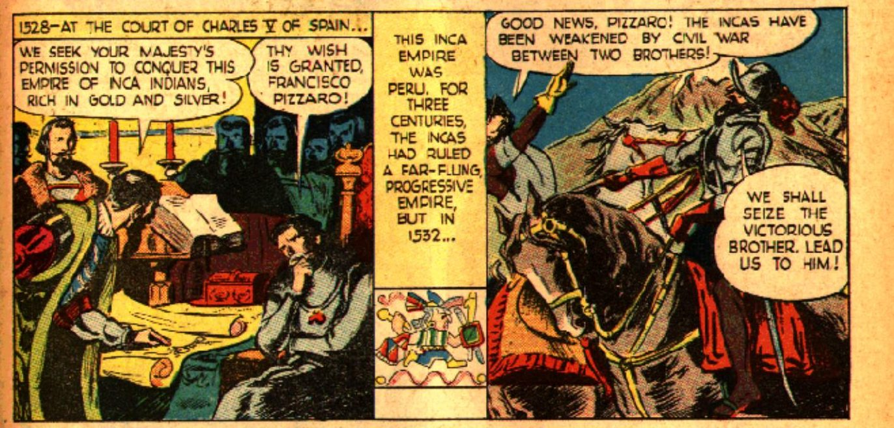

How it works: read the comic pages → answer the question about today's big idea → see what the comic got right and wrong → write 1–2 sentences. Done = all parts green, then turn in at the bottom.
Word help (tap to open)
- Conquistador = a Spanish soldier who conquered land in the Americas
- Ransom = a payment to free a prisoner
- Civil war = a war between groups inside one country
- Viceroy = a ruler sent by the king to govern a colony
- Indians = an old word the comic uses for Native people
- 1943 comic = made for American kids in the 1940s. It uses some old words and shows one point of view.

Click the page to make it bigger.
Turn in your work
Your work saves on this device, so you can come back later. Your teacher sees it after you turn it in.
Comic: True Comics no. 29 (1943), Parents' Magazine Press, a true-history comic for kids. Public domain. Scan via the Internet Archive. Cropped to today's reading.